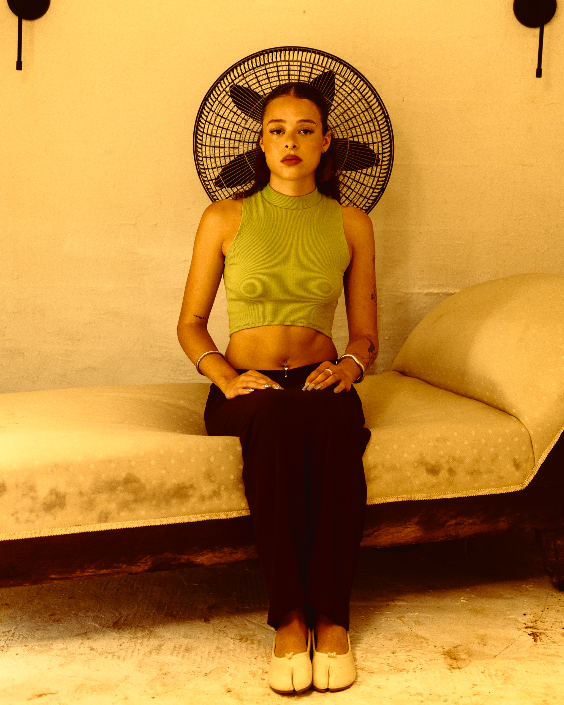
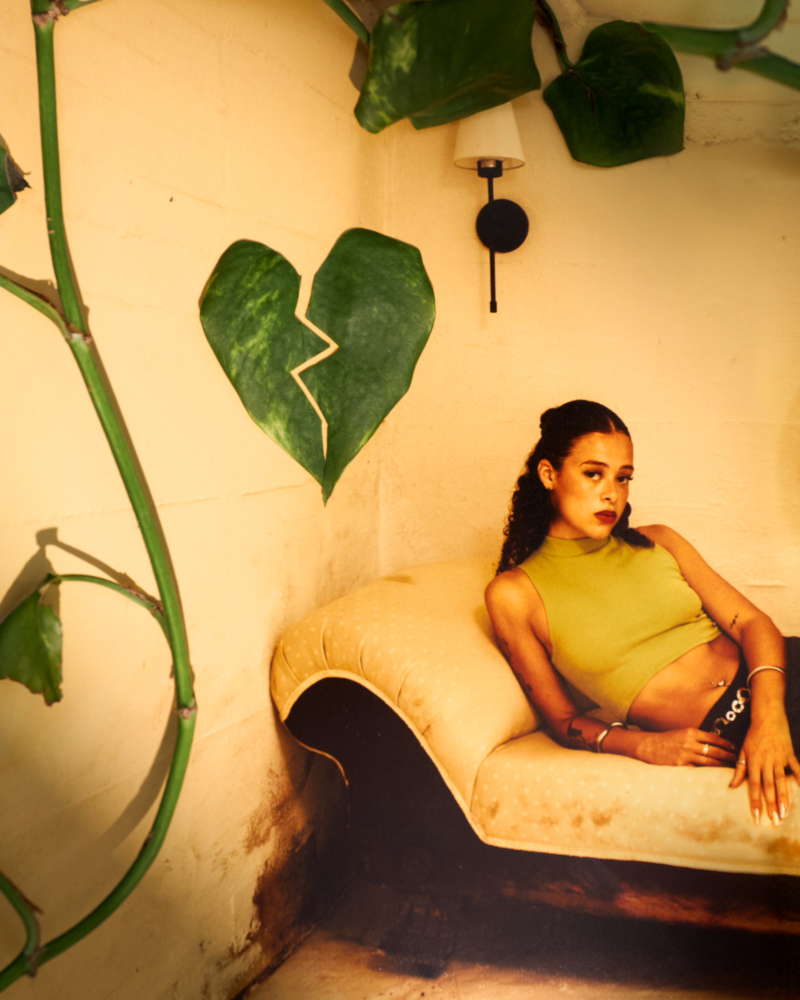
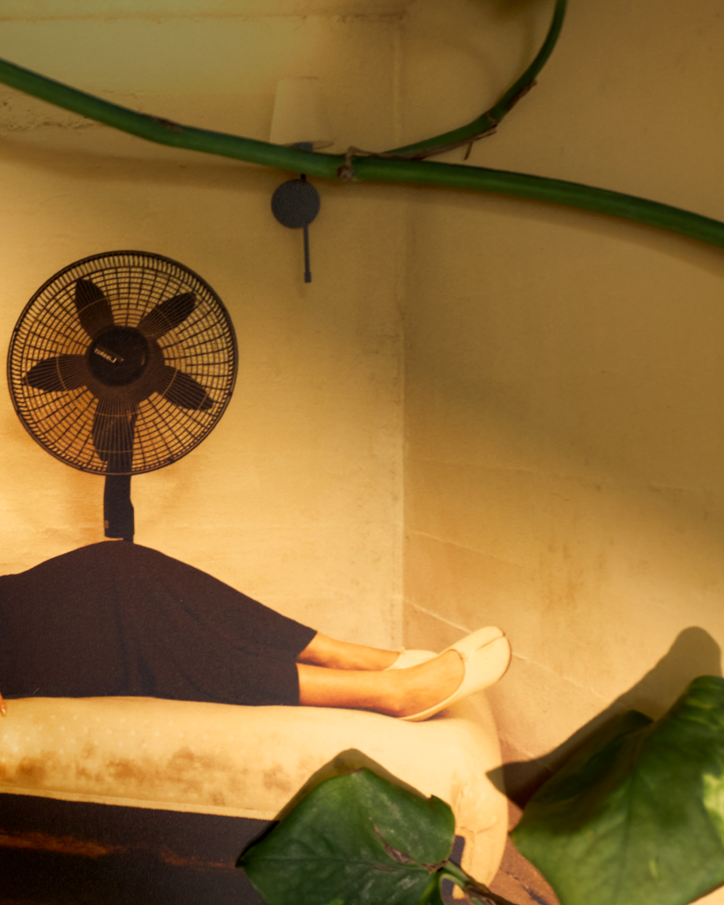
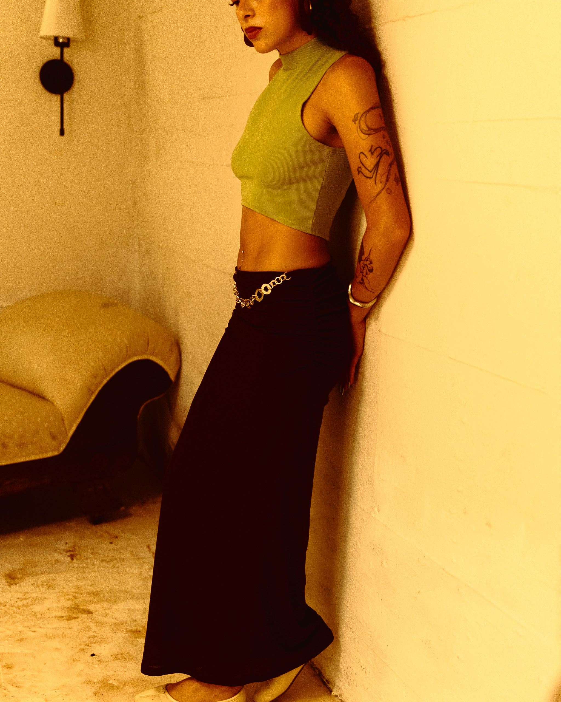
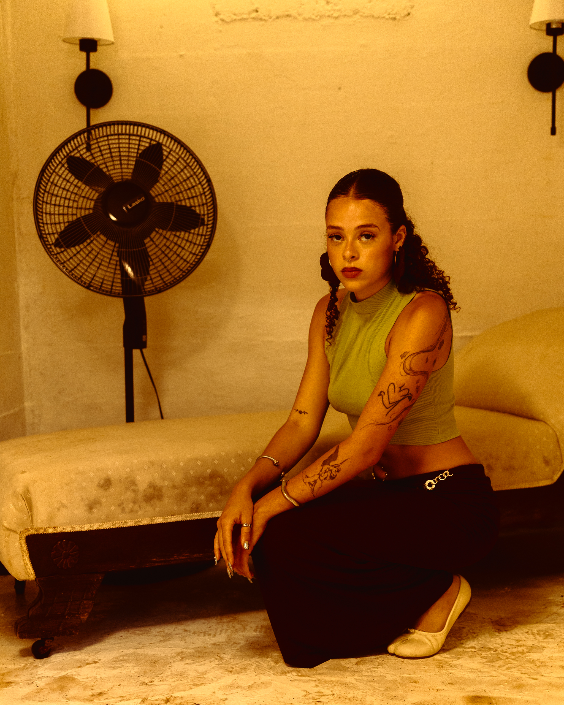

Personal Work / Photography
In Solitude
About the project
A companion piece to Near to My Heart, again with model Chastity Santiago. Where that set is about longing, this one sits with loneliness and a desolate feeling.
- Photography
- Peter Sanjur
- Model
- Chastity Santiago




